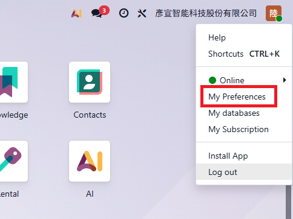
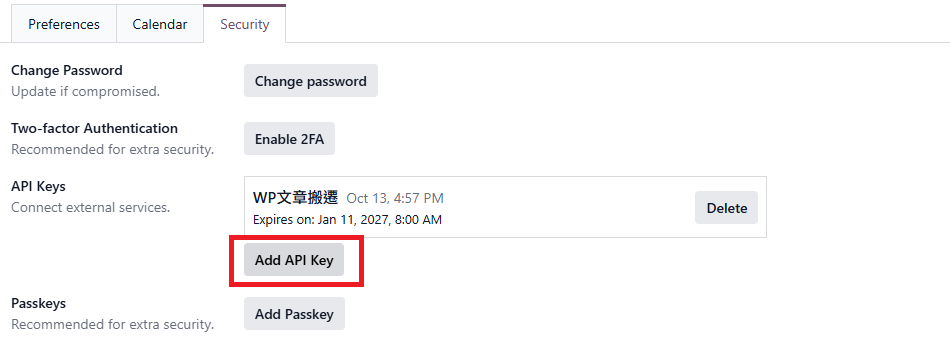
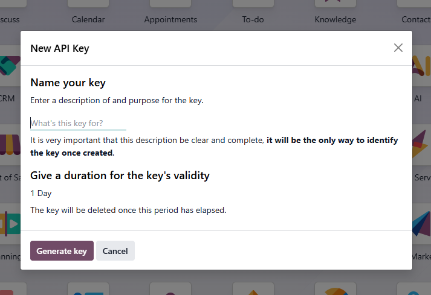
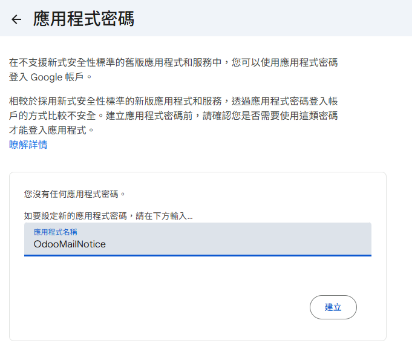
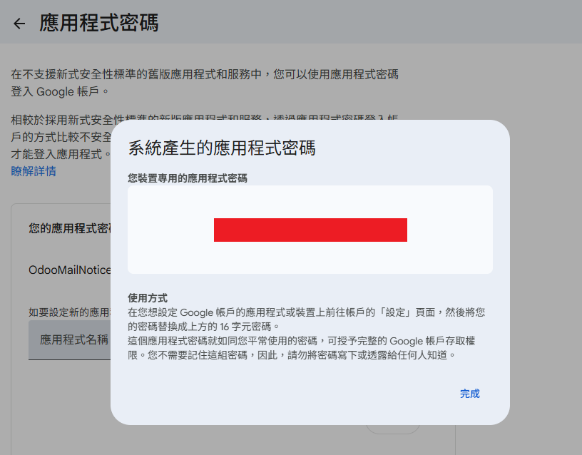

說明要填哪些資料、去哪裡找、怎麼填。照著做完，大約 15 分鐘就能收到第一封提醒信。
.env。
Odoo 網址和寄信伺服器都已經設定好了，你只要做四件事：
.env，填這三格後存檔：
| 欄位 | 填什麼 |
|---|---|
ODOO_API_KEY= | Odoo API 金鑰 |
SMTP_USER=、MAIL_FROM= | 你的 Gmail 地址（兩格填一樣） |
SMTP_PASSWORD= | Gmail 應用程式密碼（16 個字母） |
電腦需要先裝好 Python（沒裝的話，雙擊時會提示下載網址）。設定每天自動寄信，請看第六步。其他章節是給要自訂設定的人看的，可以跳過。
python --version 確認）.env.example、README.md、sales_reminder 等檔案）.env.example。.env（前面有一個點，沒有其他副檔名）。.env。接下來的每個設定都填在這個檔案裡。.env.txt。請先在檔案總管上方「檢視 → 顯示 → 副檔名」打勾再改名。
填寫格式是一行一個設定：名稱=值。等號兩邊不要加空白，值也不用加引號。以 # 開頭的是說明文字，可以不理它。
| 設定名稱 | 填什麼 | 怎麼找 |
|---|---|---|
| ODOO_URL 必填 | Odoo 的網址，只要開頭那段 例： https://yourcompany.odoo.com |
登入 Odoo 後，看瀏覽器網址列，複製到 .com 為止。後面的 /odoo/... 不要複製，結尾也不要加斜線。 |
| ODOO_DB 必填 | 資料庫名稱 例： yourcompany |
Odoo 線上版（網址是 xxx.odoo.com）的資料庫名稱，就是網址最前面那段 xxx。自架或 Odoo.sh 的系統請問系統管理員。 |
| ODOO_API_KEY 必填 | 你自己的 API 金鑰 （一長串英數字） |
照下方「如何取得 API 金鑰」操作。 |
1登入 Odoo，點右上角自己的頭像，選「My Preferences」（我的偏好）。

2切到「Security」分頁，點「Add API Key」。

3填欄位：
| 欄位 | 填什麼 |
|---|---|
| Name your key | 用途名稱，例如「報價到期提醒」 |
| Give a duration | 有效期限。預設 1 Day 要改長（例如 3 個月），否則隔天金鑰就失效 |

4按「Generate key」，複製畫面上的金鑰（只顯示這一次），貼到 .env 的 ODOO_API_KEY= 後面。
填好後，這段看起來會像這樣（以下為示範值）：
ODOO_URL=https://yourcompany.odoo.com ODOO_DB=yourcompany ODOO_API_KEY=0a1b2c3d4e5f6a7b8c9d0e1f2a3b4c5d6e7f8a9b
在本工具的資料夾空白處按右鍵 →「在終端機中開啟」，輸入：
python -m sales_reminder --dry-run
這一步不會寄信，只會在畫面上印出「如果今天寄信，內容會是什麼」。看到最後一行像下面這樣，就代表 Odoo 已經接通：
結果：dry_run｜掃描 14 筆｜提醒 8 筆
如果顯示 結果：nothing，代表連線正常，只是今天剛好沒有需要提醒的報價。出現錯誤訊息的話，請看文末的「常見問題」。
| 設定名稱 | 填什麼 | 說明 |
|---|---|---|
| EMAIL_ENABLED | false 或 true | 寄信總開關。預設是 false，這時只會預覽、不會寄。全部填好、確認無誤再改成 true。 |
| SMTP_HOST 寄信必填 | 寄信伺服器 | 見下方「常見信箱設定」。 |
| SMTP_PORT | 通常是 587 | 用 ssl 方式時通常是 465。 |
| SMTP_SECURITY | starttls／ssl／none | 加密方式，絕大多數填 starttls。 |
| SMTP_USER | 寄信信箱的完整帳號 | 例：notice@yourcompany.com |
| SMTP_PASSWORD | 寄信信箱的密碼 | Google／Microsoft 信箱請用應用程式密碼，不是平常登入的密碼（見下方）。 |
| MAIL_FROM 寄信必填 | 寄件人地址 | 一般跟 SMTP_USER 填一樣即可。 |
| MAIL_TO 寄信必填 | 收件人，多人用逗號分隔 | 例：sales1@yourcompany.com,sales2@yourcompany.com第一次測試建議先只填你自己。 |
| INTERNAL_DOMAINS 建議填 | 公司信箱網域 | 例：yourcompany.com。填了之後，收件人只要不是這個網域，程式就會拒絕寄出，避免誤寄給客戶。 |
| 信箱服務 | SMTP_HOST | SMTP_PORT | SMTP_SECURITY | 密碼 |
|---|---|---|---|---|
| Gmail／Google Workspace | smtp.gmail.com | 587 | starttls | 應用程式密碼（16 碼） |
| Microsoft 365／Outlook | smtp.office365.com | 587 | starttls | 依公司 IT 設定 |
| 公司自有郵件主機 | 請向 IT 或主機商索取 SMTP 主機、連接埠與加密方式 | |||
1用 Chrome 登入你的 Gmail，開啟 myaccount.google.com/apppasswords（Google 可能會要你再輸入一次密碼）。
2在「應用程式名稱」填用途名稱，例如 OdooMailNotice，按「建立」。

3畫面會顯示 16 個字母（只顯示這一次）。複製後貼到 .env 的 SMTP_PASSWORD= 後面（有沒有空白都可以），再按「完成」。

| 遇到狀況 | 處理 |
|---|---|
| 頁面顯示「這項設定不適用」 | 要先開啟兩步驟驗證：Google 帳戶 →「安全性」→「兩步驟驗證」，開好再回來建立。 |
| 寄件人顯示你的 Gmail | 正常。Gmail 只能用自己的地址寄出，所以 MAIL_FROM 要跟 SMTP_USER 一樣。 |
| 第一封信進了垃圾郵件 | 標記「不是垃圾郵件」，之後就會正常進收件匣。 |
MAIL_TO 只填了你自己的信箱。EMAIL_ENABLED 改成 true，存檔。python -m sales_reminder（這次不加 --dry-run）。結果：ok，就去收信，順便點一個報價單號，確認會開到 Odoo 的那張報價單（需要已登入 Odoo）。MAIL_TO 改成正式收件人，再刪除資料夾裡的 data/reminder.db。
系統會記錄「哪些提醒已經寄過」來避免重複寄送；不刪掉的話，你測試時收到的那幾筆，正式收件人就不會再收到。
在本工具的資料夾開啟 Claude，跟它說：
幫我設定每天自動提醒
Claude 會先問你手邊有什麼工具（Claude 雲端排程、Claude 桌面版、Windows 工作排程器或 Linux 主機），再一步一步帶你設定好。
如果你選 Claude 雲端排程，.env 要多改一項：STATE_MODE=stateless。原因是雲端每次執行都是全新環境，無法保留「已寄過」的紀錄。
不填就使用預設值。改完存檔，下次執行就會生效。
| 設定名稱 | 預設 | 作用 | 例子 |
|---|---|---|---|
| DUE_SOON_DAYS | 7 | 到期前幾天發「即將到期」提醒，可填 7 到 14 | DUE_SOON_DAYS=10到期前 10 天提醒 |
| TRACK_STATES | sent | 要追蹤哪些狀態的報價。sent＝已發送給客戶；draft＝草稿 | TRACK_STATES=sent,draft連草稿一起追蹤 |
| OVERDUE_MAX_DAYS | 30 | 逾期超過幾天就不再列入，避免陳年舊單一直出現 | OVERDUE_MAX_DAYS=90 |
| MIN_GAP_DAYS | 3 | 「效期過半」和「即將到期」日期相距少於這個天數時，只寄後面那次 | 一般不用改 |
| MIN_AGE_DAYS | 1 | 報價建立未滿幾天不提醒 | 一般不用改 |
| STATE_MODE | db | 用 Claude 雲端排程時改成 stateless，其他情況維持 db | 見第六步 |
.env 改不到的調整，例如「每位業務只收到自己的報價」「信裡加產品明細」，直接用口語跟 Claude 說就好，它會依照 SKILL.md 的規範修改並測試。
| 畫面出現 | 原因與處理 |
|---|---|
設定錯誤：缺少必要設定：ODOO_URL… | 找不到 .env，或那幾項沒填。確認檔名是 .env（不是 .env.txt），而且和 .env.example 放在同一個資料夾。 |
Odoo 拒絕存取（HTTP 401） | API 金鑰錯誤或已過期（最常見：建立時沒改掉預設的 1 Day）。重新產生一把、期限選長一點，完整貼上，前後不要多空白。 |
Odoo 拒絕存取（HTTP 403） | 帳號沒有銷售模組的權限，請管理員開啟。 |
Odoo 連線重試 3 次仍失敗 | 網址填錯或網路不通。檢查 ODOO_URL 是否只有 https://xxx.odoo.com，再用瀏覽器確認打得開。 |
Odoo 回應錯誤 HTTP 404 | 通常是 ODOO_DB 填錯，請對照網址最前面那段。 |
EMAIL_ENABLED=true 但缺少：… | 開啟寄信後，SMTP_HOST、MAIL_FROM、MAIL_TO 都必須填。 |
SMTP 帳密錯誤 | Google／Microsoft 信箱要用應用程式密碼，不是登入密碼。 |
收件人不在內部網域 | MAIL_TO 裡有外部信箱，或 INTERNAL_DOMAINS 拼錯。這是防止誤寄客戶的保護機制。 |
（EMAIL_ENABLED 未開啟，所以只預覽沒寄信） | 不是錯誤。要真的寄信，請把 EMAIL_ENABLED 改成 true。 |
結果：nothing | 不是錯誤，代表今天沒有需要提醒的報價。 |
已有另一個提醒程序在執行 | 同時跑了兩次，等上一次結束即可。如果確定沒有程序在跑，刪除 data/run.lock。 |
查看最近 10 次執行結果：python -m sales_reminder --status。更詳細的紀錄在 data/reminder.log。